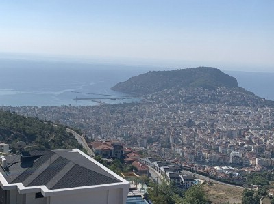
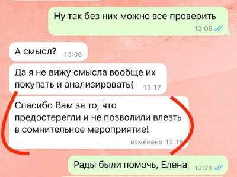
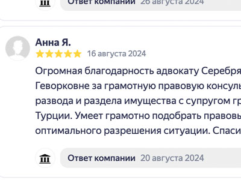

За последние годы очень популярным направлением для релокации стала Турция, больше стало переезжающих на ПМЖ или для туристической визы в Турецкую Республику. В связи с этим у наших соотечественников возник повышенный спрос на покупку жилья в таких городах как Аланья, Анталья и Стамбул, на покупку "вторички" у моря. Но не все ориентируются в указанных городах и не знают с чего начинать покупку в Турции квартиры своей мечты.

Сопровождение покупки
квартиры в Турции
отправьте заявку на WhatsApp
Купить квартиру в Аланье или Анталии.
Для того чтобы нашим соотечественникам было максимально комфортно в другой стране ориентироваться в законодательстве Турции, мы создали уникальное партнерство.
Наше партнерство представляет собой тандем ряда крупных Агентств недвижимости Турции и Коллегии адвокатов г. Москвы. Объединение профессионалов для удовлетворения Ваших нужд и потребностей.
Пользуясь нашей профессиональной помощью, Вы избежите всех рисков, связанных с незнанием законов и нравов другой страны.
Наши специалисты находятся в трех городах Турции – Стамбуле, Анталии, Аланье, что поможет Вам без труда выйти на связь в реальном времени с нашими коллегами.
Что входит в нашу услугу по сопровождению сделки?
-
Юридическая проверка объекта недвижимости (_Due Diligence_). Это самый важный этап. Мы проверяем юридическую чистоту недвижимости: наличие обременений (залоги, аресты), отсутствие долгов за коммунальные услуги (айдат), соответствие данных в ТАПУ (свидетельстве о праве собственности) реальному объекту и статусу продавца.
-
Проверка продавца и договора. Мы анализируем правовой статус продавца и помогаем составить или проверить предварительный договор (Sat?s Vaadi Sozlesmesmesi) и основной договор купли-продажи, чтобы все условия защищали именно ваши интересы.
-
Полное сопровождение сделки. Мы представляем ваши интересы в Кадастровом управлении (Tapu Mudurlugu) при передаче ТАПУ, помогаем с открытием банковского счета в Турции и проведением безопасной оплаты.
-
Консультации по налогам и сборам. Вы будете точно знать, какие налоги и государственные пошлины вам необходимо оплатить при покупке и оформлении недвижимости, и мы поможем это сделать правильно.
Сотрудничая с нами Вы получите:
-
Индивидуальный подбор необходимых объектов;
-
Профессиональное юридическое сопровождение сделки;
-
Представление Ваших интересов в Турции и России;
-
Решение вопросов по переводу средств;
-
Ускорение переезда на ПМЖ;
-
Сопровождение оформления ВНЖ и гражданства;
-
Послепродажное обслуживание;
-
Оформление документов на жилье (тапу)
Помощь в оформлении
квартиры в Турции
заявка на WhatsApp
Выберите необходимую юридическую помощь
Подбор вариантов недвижимости
в Турции
Консультации по гражданству Турции
Проверка объекта недвижимости
перед куплей
Оформление квартиры
в Турции
В чем плюсы сотрудничества с нами ?
-
Наше партнерство уникально – владеем знаниями законодательства двух стран
-
Крупнейшая база недвижимости напрямую без посредников
-
Возможность работать с нами дистанционно
-
Дорожим своей репутацией, поэтому мы внимательны к нашим клиентам
-
Отсутствие сложностей по переводу средств через границы.
Отзывы доверителей о нашей работе.




Совместный видеообзор с парнерами - Компанией «Expert Property»
Интервью с руководителем компании Татьяной Гюнеш
Где лучше купить квартиру в Турции?
Как оформить квартиру в Турции?
Как перевести деньги на покупку квартиры в Турции?
Существуют ли в Турции долгострои ?
Какие лучшие направления для инвестиции в Турцию ?
Интресное на тему недвижимости в Турции. Динамичный Стамбул – за 10-20 лет город планируют «полностью обновить», и уже начали готовить под это инфраструктуру
Весной власти и местный бизнес всерьез взялись за Стамбул. Причем как над его сейсмической безопасностью, так и в плане комфорта для жителей – транспорт, доступ к услугам и отдых. Самый большой парк страны, к слову, открывается уже в мае в локации бывшего аэропорта Ататюрка.
Уже запущены многочисленные программы реновации и реорганизации жилого фонда, под них выделены миллиарды (и не лир, а долларов), но многих все равно волнует вопрос, когда же все работы завершат.
Согласно подсчетам профильной компании AIDER, «полное обновление» фонда займет до 20 лет и потребует примерно 30 млрд долл. инвестиций.
Главной проблемой является масштаб мегаполиса. Снос старых и строительство новых домов по программе реновации и без того активно идет (иногда под снос идут целые микрорайоны). Но вопреки стараниям за 20 лет активного обновления процент нового жилья (т.е. возведенного после 2000 года) удалось довести лишь до 30% от общего числа домов.
Что касается инфраструктуры, то тут дела гораздо лучше. Активно строится метро – подземное и наземное, дороги, паромные переправы, сфера отдыха. Например, линию метро Башакшехир-Каяшехир (продолжение ветки от Нового аэропорта) намерены запустить в мае «под выборы», а вокруг каждой станции идет «облагораживание».
Растет активность и вокруг – города-спутники мегаполиса решено «облагородить» в формате «город в городе».
ЖИЛЬЕ В ТУРЦИИ ЗА ГОД ПОДОРОЖАЛО НА 103% И ЭТА ТЕНДЕНЦИЯ СОХРАНЯЕТСЯ
Согласно данным Центрального банка Турции, которые были обнародованы сегодня, жилье в Турции с мая 2022 года подорожало на 103,6%, и на 45% в инфляционно-скорректированном выражении. Индекс стоимости жилья в мае вырос на 3,6% по сравнению с апрелем.
Квадратный метр жилья в среднем по Турции стоит около $1 144. Для Стамбула эта цифра составляет $1 747, для Анкары - $856, для Измира - около $1 315.